40 سؤال
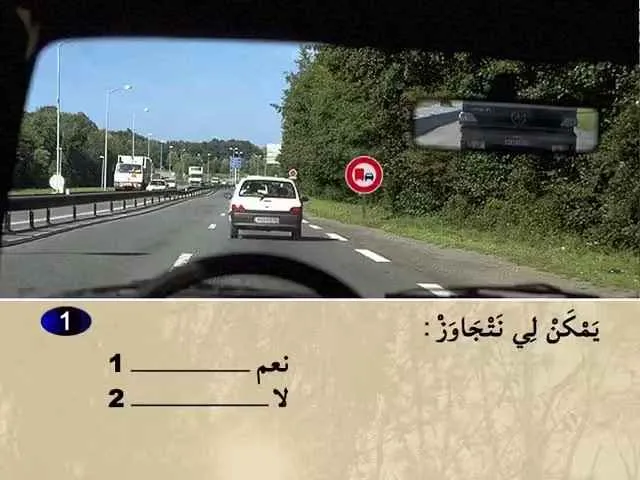
الجواب الصحيح: 1
الطريق ذات اتجاه واحد، نقدر ندوز، ما كايناش علامة منع. العلامة كتعني الشاحنات فقط، ماشي السيارات.
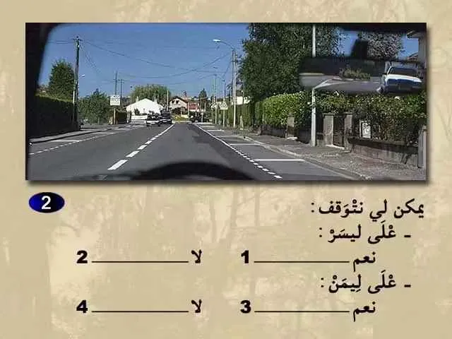
الجواب الصحيح: 2 و 3
الطريق بجوج اتجاهات، ما نقدرش نوقف فالجهة المعاكسة، خاصنا نوقفو غير فاليمين.
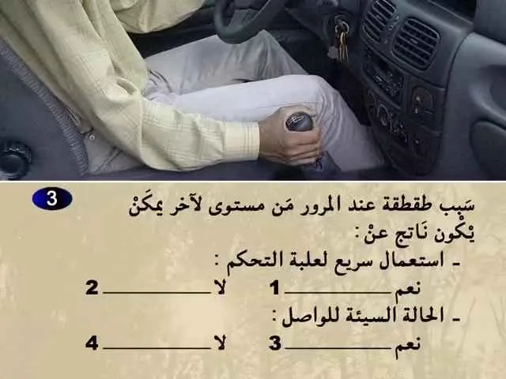
الجواب الصحيح: 1 و 3
صوت الطرطقة كيجا من الاستعمال السريع لعلبة التحكم، أو الحالة السيئة للواصل.
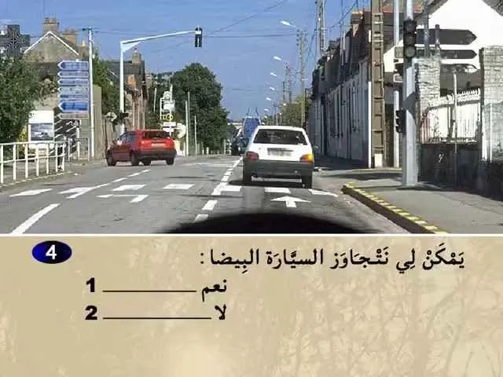
الجواب الصحيح: 2
السيارة البيضاء غادي تبدل الاتجاه لليمين، السهم كيجبرنا ننعطفو لليسار، ما نقدرش نضوبل فالمسلك الثاني. خاصنا نردو البال نقسو السرعة.
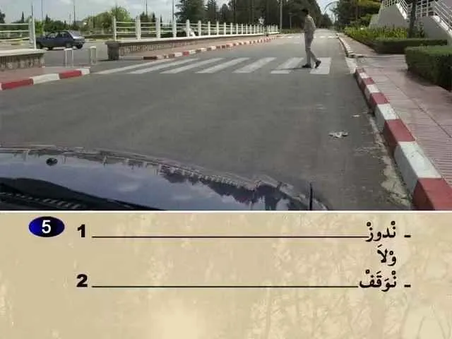
الجواب الصحيح: 2
ملي يدخل الراجلين فالمسلك، خاصنا نعطيوهم حق الأسبقية ونصبر حتى يدوزو.
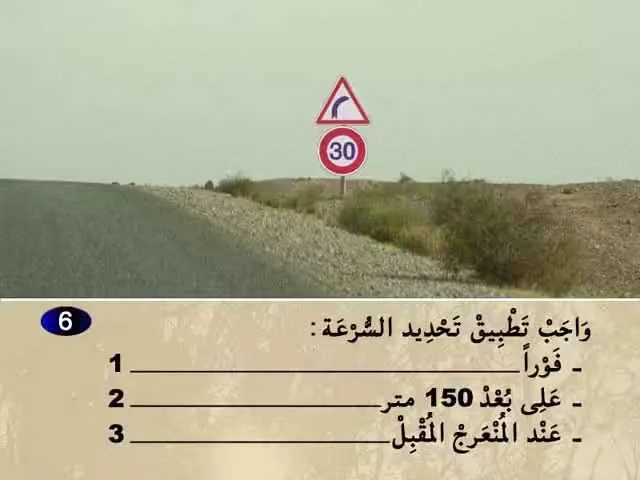
الجواب الصحيح: 1
علامة 30 كلم في الساعة كتطبق من العلامة ديالها مباشرة.
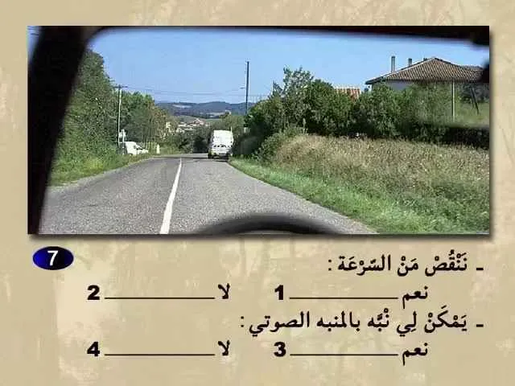
الجواب الصحيح: 1 و 3
كاين خطر فالصورة، السيارة ولا الشاحنة واقفة مزيان فلطريق، وخطر فالجنب اليسر، خاصنا نقسو السرعة ونديرو التنبيه الصوتي.
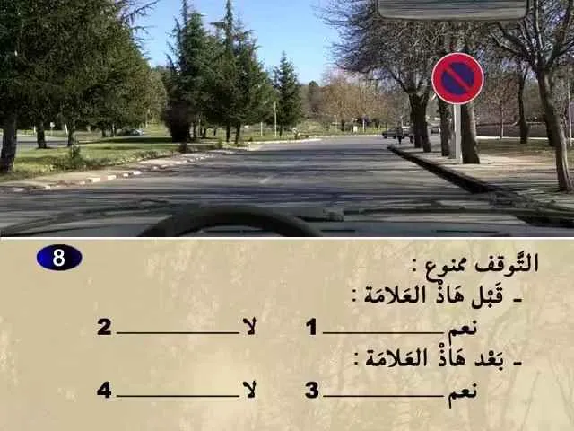
الجواب الصحيح: 2 و 3
العلامة الطرقية كيبدا المنع ديالها من عند العلامة، مكاينش علامة تكميلية لي كتحدد واش المنع كيطبق حتا قبل العلامة.
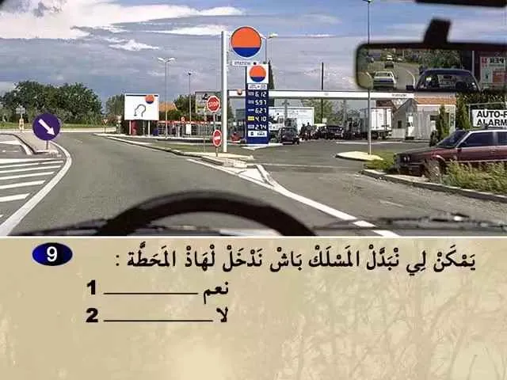
الجواب الصحيح: 2
ما نقدرش نبدل المسلك حيت وصلنا للخط المتصل.
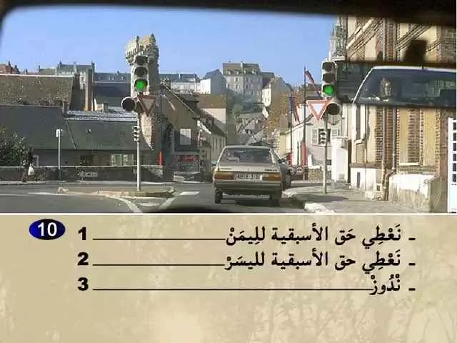
الجواب الصحيح: 3
العلامات الطرقية كتقول ما عندناش حق الأسبقية، ولكن الإشارات الضوئية كتغلب. عندنا الضوء الأخضر، خاصنا ندوزو.
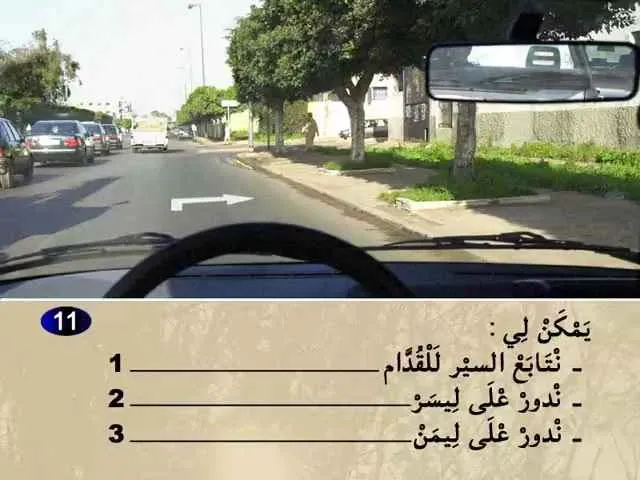
الجواب الصحيح: 3
السهم فالطريق كيجبّر على الانعطاف لليمين.
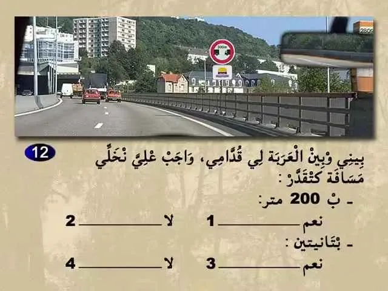
الجواب الصحيح: 2 و 3
علامة 200 متر كتخص الشاحنات، مسافة الأمان كتقدر بثانيتين.
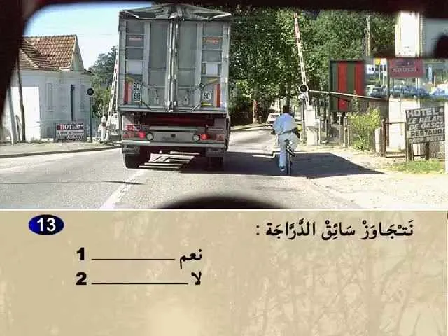
الجواب الصحيح: 2
سائق الشاحنة دار مخالفة، ما نقدرش ندوز الخط المتصل.
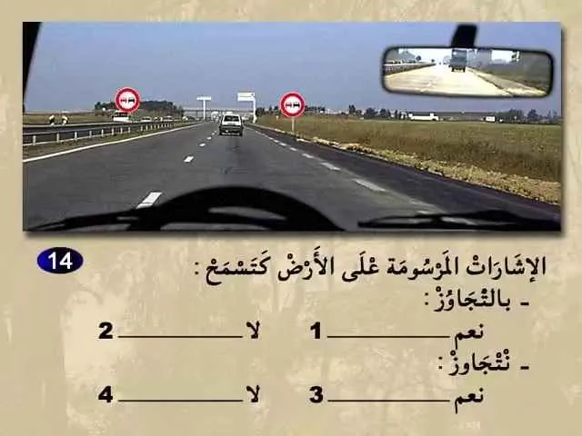
الجواب الصحيح: 1 و 4
الخط المتقطع على الأرض كيسمح بالتجاوز، لكن العلامة العمودية كتمنعنا دابا.
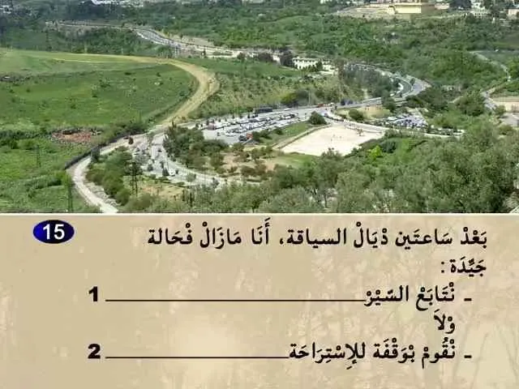
الجواب الصحيح: 2
بعد ساعتين ديال السياقة، خاص 15 دقيقة راحة.
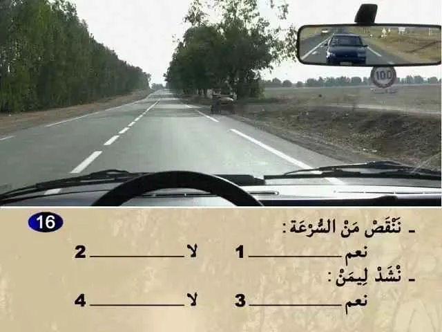
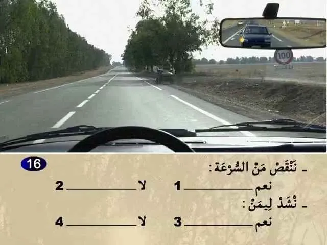
الجواب الصحيح: 2 و 3
ملي شي سيارة بغات تدوزنا، ما نغيروش السرعة ونبقاو فمسلكنا.
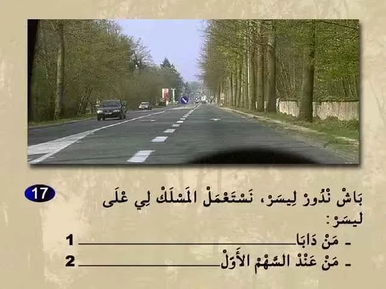
الجواب الصحيح: 1
بغيت نبدل لليسار، خاصني نبدل المسلك دابا حيت السهم كيجبرني.
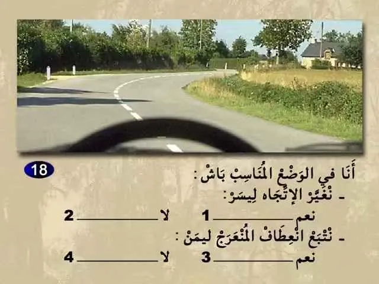
الجواب الصحيح: 2 و 4
ماشي فالمكان المناسب للانعطاف لليمين ولا ليسار، خاصني نكون فالمسلك اللي على اليمين.
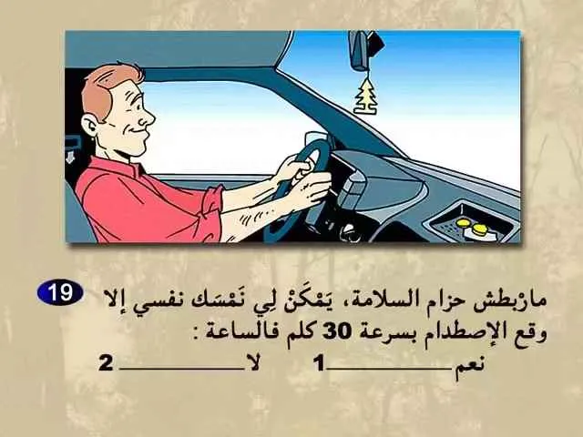
الجواب الصحيح: 2
حزام السلامة ضروري مهما كانت سرعة، ما نقدرش نتحكم فراسي عند الاصطدام.
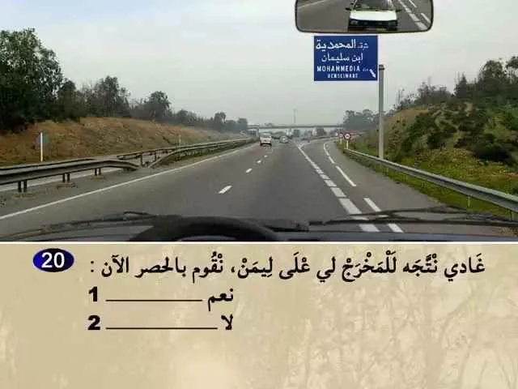
الجواب الصحيح: 2
حنا فطريق سيار، ما زال ما وصلناش للمخرج اليمين باش نبطأ السرعة.
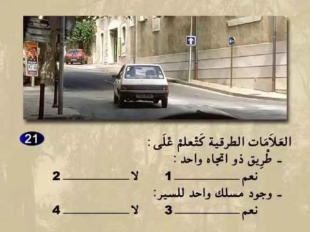
الجواب الصحيح: 1 و 4
العلامة الطرقية كتعني طريق اتجاه واحد، ماشي مسلك واحد. الطريق فيها جوج مسالك.
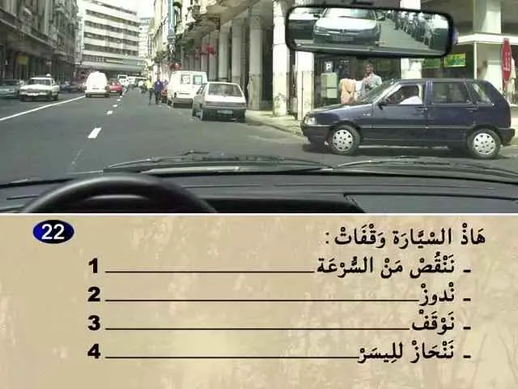
الجواب الصحيح: 1 و 2
فالصورة، علامة قف كتعني السيارة السوداء خاصها توقف، حنا ننسو السرعة ونمرو.
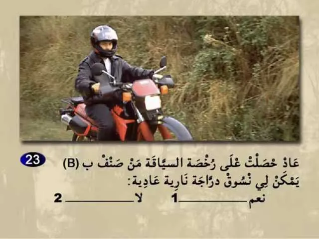
الجواب الصحيح: 2
رخصة السياقة صنف (B) كتخص السيارات فقط، الدراجة النارية كتحتاج (A).
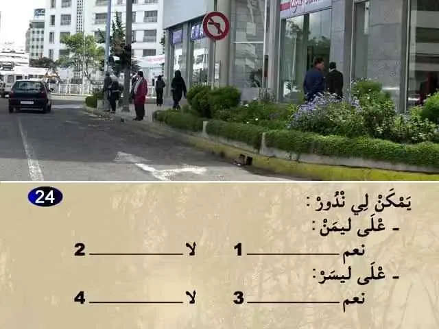
الجواب الصحيح: 1 و 4
فهاد الحالة نقدر ننعطف لليمين ولا نكمل الطريق، ممنوع الانعطاف ليسار.
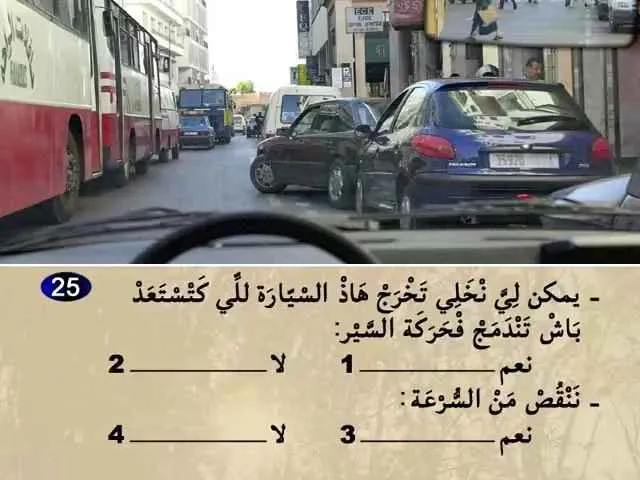
الجواب الصحيح: 1 و 3
السير متوقف، ما كايناش مشكلة ندمجو السيارة فالسير.
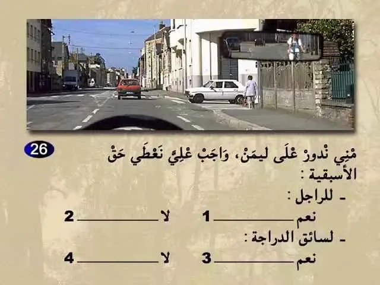
الجواب الصحيح: 1 و 3
عند الانعطاف لليمين، خاصنا نعطيو الأسبقية للراجلين والدراجة اللي ورانا.
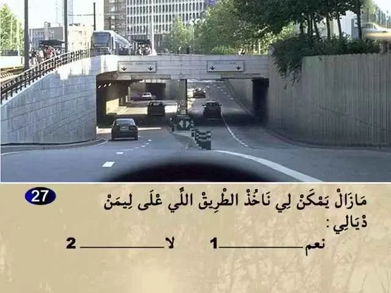
الجواب الصحيح: 2
ما نقدرش نغير الاتجاه لليمين حيت الخط متصل.
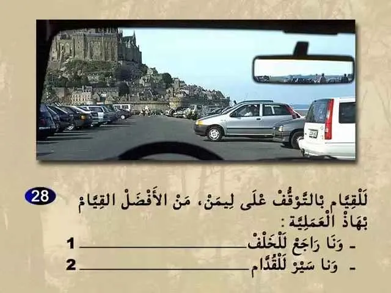
الجواب الصحيح: 1
التوقف على اليمين مسموح، لكن من الأفضل التراجع للخلف باش الخروج يكون سهل وآمن.
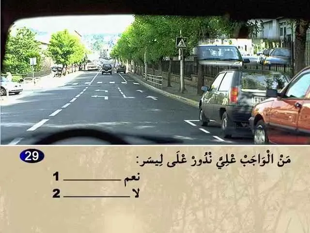
الجواب الصحيح: 2
السهم المرسوم على الأرض كيجبّر على الانعطاف لليسار، لكن ما وصلناش ليه دابا.
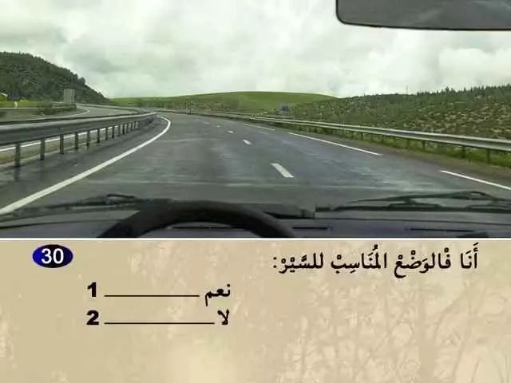
الجواب الصحيح: 2
المسلك الأول على اليمين خاص بالسير العادي، أنا دابا فمسلك التجاوز.
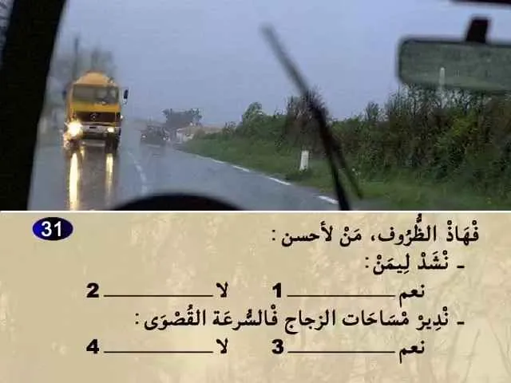
الجواب الصحيح: 1 و 3
فحالة المطر، خاصنا نسيروا فمسلكنا، ونستعملوا مسّاحات الزجاج فالسرعة القصوى.
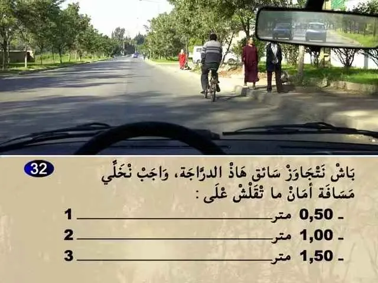
الجواب الصحيح: 2
تجاوز الدراجات داخل المدينة خاص يكون بمسافة متر، وخارج المدينة متر ونصف.
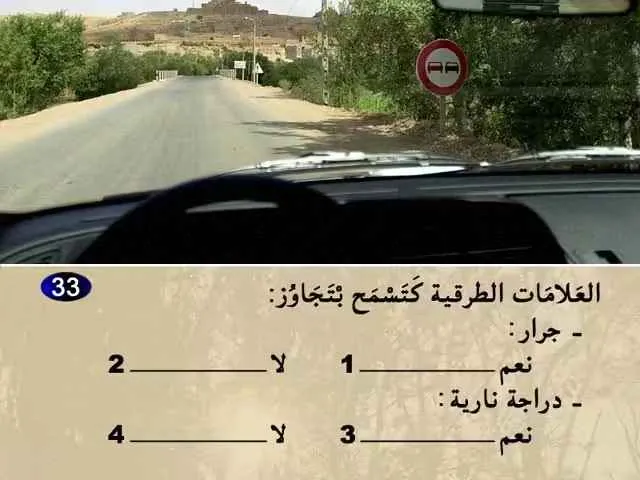
الجواب الصحيح: 2 و 3
العلامة الطرقية كتعني منع التجاوز للعربات ب 4 عجلات، الجرار عندو 4 عجلات ما نقدرش نتجاوزو، الدراجة النارية عندها جوج عجلات نقدر نتجاوزها.
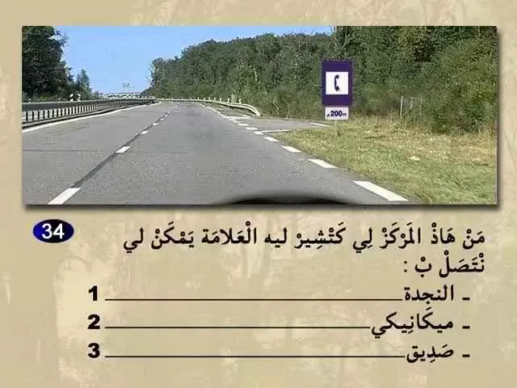
الجواب الصحيح: 1
حنا فطريق سيار وفيه مركز النجدة، للاتصال بالنجدة فقط.
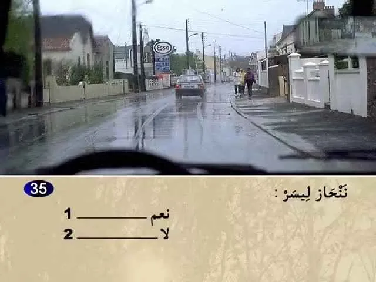
الجواب الصحيح: 1
فالمطر، القانون كيقول خاصنا نترك مسافة عند التقابل.
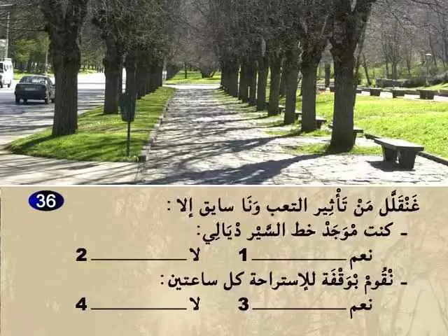
الجواب الصحيح: 1 و 3
تقليل تأثير التعب كيتعلق ببرنامج السير، الوقفة ديال الراحة كل ساعتين ضرورية.
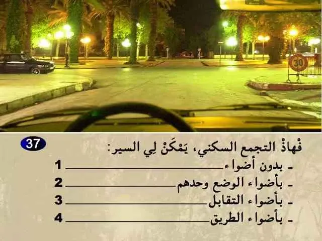
الجواب الصحيح: 2 و 3
فالليل، الأضواء ضرورية حتى بوجود إنارة المدينة.
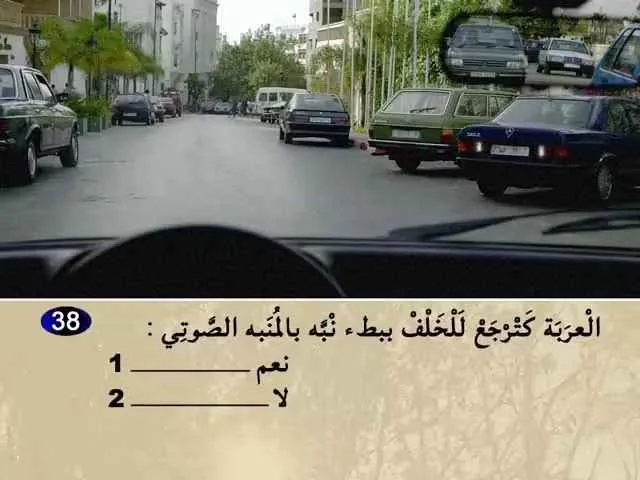
الجواب الصحيح: 2
المنبّه الصوتي ممنوع فالمدينة إلا للضرورة القسوى، ما نستعملوش.
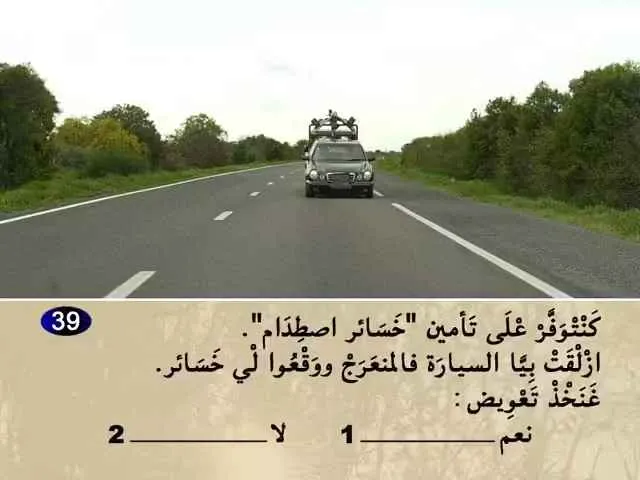
الجواب الصحيح: 2
التأمين كيتنوع، مثلا عندنا تأمين السرقة، الحريق، والخسائر المادية. فحالة السؤال التأمين خاص بخسائر الإصطدام، ما يعوضونيش على شي حاجة أخرى.
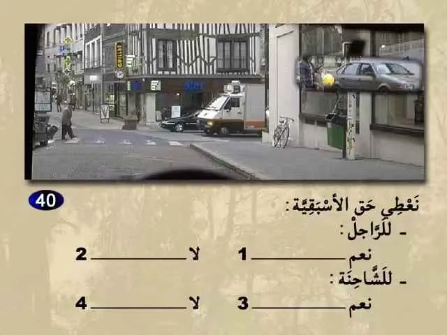
الجواب الصحيح: 1 و 3
نعطي حق الأسبقية للراجلين فممر الراجلين، وللشاحنة لأن الأسبقية للعربات القادمة من الجهة اليمنى.